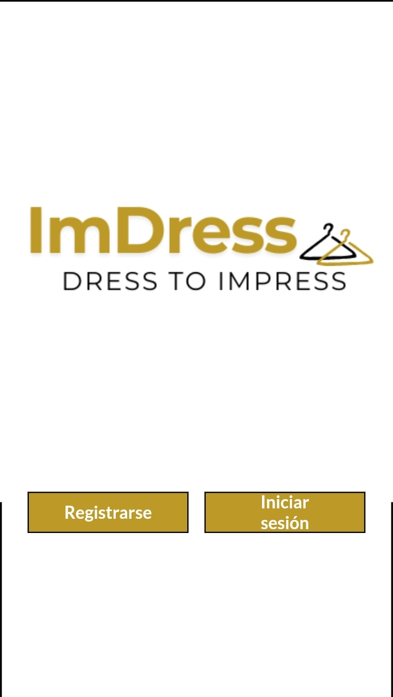

Proyecto 2
ImDress
App móvil que busca crear y mejorar un sistema de alquiler de ropa en la industria salvadoreña, digitalizando un mercado poco explotado.



El problema
El alquiler de ropa en El Salvador es un mercado poco explotado y con poca presencia digital. ImDress propone crear y mejorar un sistema de alquiler que lo lleve a una app móvil.
Mi rol
Ejercí como líder del proyecto con un equipo de 7 miembros, y también como programador mediante la plataforma de PowerApps.
Tecnologías
- PowerApps